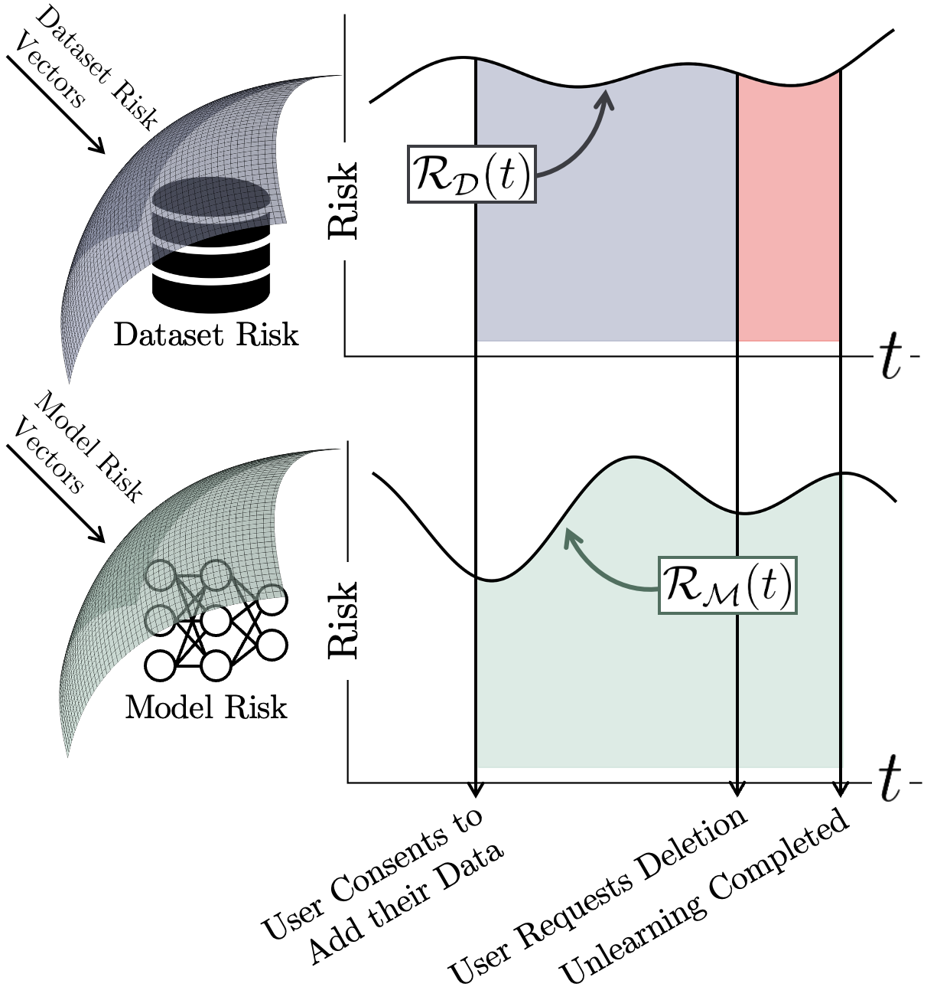

Privacy Risk
In many facets of modern life, individuals consent for institutions to collect and use their personal data. The act of collecting and storing a user's data poses inherent risk to the user.
Informally, modern machine learning systems expose the user to two types of risk: dataset risk represents the user risk associated with an institution storing a user's data, while model risk represents the additional risk to the user when their data is used to train a machine learning model.
Conventional unlearning algorithms admit a cumulative user risk totalling the sum of the green, blue, and red regions. By allowing user data to be deleted immediately once a request for deletion is made, Reload eliminates the user risk associated with the red region.